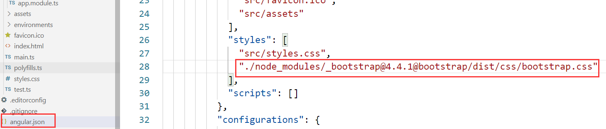
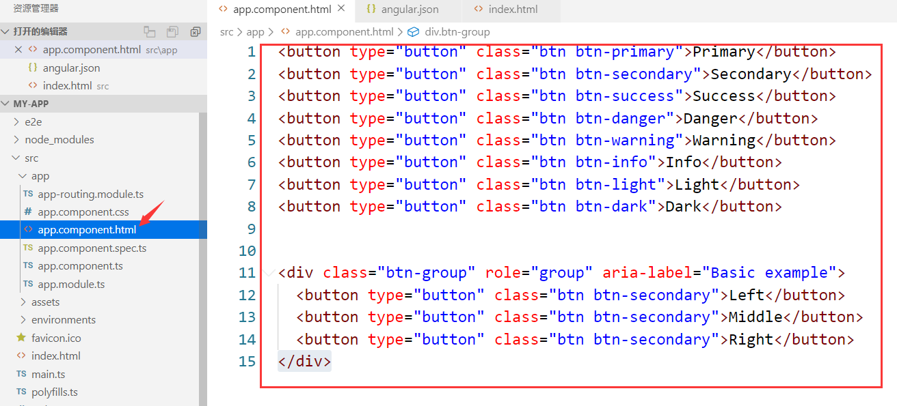

目录
ng1了解AngularJSCLI查看电脑上Angular CLI的版本信息创建第一个Angular项目Angular项目目录结构详解ngModel指令的操作ng2引入BootStrap框架创建组件(在app根组件下创建)自动创建组件数据绑定模板页向业务逻辑进行事件触发数据绑定到事件双向数据绑定ng3判断指令：*ngIf控制样式指令循环指令：*ngFor基础知识项目应用ng44.1Angular项目启动在生产环境下4.2Angular三大核心概念4.3Angular架构特色4.4组件通信4.4.1父组件向子组件传递数据案例一4.4.2子组件向父组件传递数据案例一4.5视图封装Angular中的ViewEncapsulation通过input向ts中传递数据方式一：(通过input绑定属性：#属性名)方式二：(通过viewchild注解)*另一种父组件向子组件传值的方式
ng1
了解AngularJS
1、AngularJS 诞生于2009年，由Misko Hevery 等人创建，后为Google所收购。是一款优秀的前端JS框架，已经被用于Google的多款产品当中。AngularJS有着诸多特性，最为核心的是：MVC（Model–view–controller）、模块化、自动化双向数据绑定、语义化标签、依赖注入等等。
2、AngularJS 是一个 JavaScript框架。它是一个以 JavaScript 编写的库。它可通过 <script> 标签添加到HTML 页面。
3、AngularJS 通过 指令 扩展了 HTML，且通过 表达式 绑定数据到 HTML。
4、AngularJS 是以一个 JavaScript 文件形式发布的，可通过 script 标签添加到网页中。
5、AngularJS 这套Js框架针对于SPA(Single-Page-Application)应用。
CLI
CLI是一个工具，可以将Angular项目中的ts代码编译成浏览器可以解析的js代码。
查看电脑上Angular CLI的版本信息
通过命令：ng --version
创建第一个Angular项目
ng new my-first-angular-app
如果安装过慢可以Ctrl+c打断，
然后cd 进入新建的项目：cd my-first-angular-app，
再通过cnpm install 进行安装。
通过ng serve 来启动项目
设置指定端口启动项目：
ng serve --port 8888
Angular项目目录结构详解
首层目录：
- 【node_modules 】 第三方依赖包存放目录
- 【e2e 】 端到端的测试目录 用来做自动测试的
- 【src 】 应用源代码目录
- 【.angular-cli.json 】 Angular命令行工具的配置文件。后期可能会去修改它，引一些其他的第三方的包 比如jquery等 -【 karma.conf.js】 karma是单元测试的执行器，karma.conf.js是karma的配置文件
- 【package.json 】 这是一个标准的npm工具的配置文件，这个文件里面列出了该应用程序所使用的第三方依赖包。实际上我们在新建项目的时候，等了半天就是在下载第三方依赖包。下载完成后会放在node_modules这个目录中，后期我们可能会修改这个文件。
- 【protractor.conf.js】 也是一个做自动化测试的配置文件
- 【README.md】 说明文件
- 【tslint.json】 是tslint的配置文件，用来定义TypeScript代码质量检查的规则，不用管它
src目录：
app目录 包含应用的组件和模块，我们要写的代码都在这个目录
assets目录 资源目录，存储静态资源的 比如图片
environments目录 环境配置。Angular是支持多环境开发的，我们可以在不同的环境下（开发环境，测试环境，生产环境）共用一套代码，主要用来配置环境的
index.html 整个应用的根html，程序启动就是访问这个页面
main.ts 整个项目的入口点，Angular通过这个文件来启动项目
polyfills.ts 主要是用来导入一些必要库，为了让Angular能正常运行在老版本下
styles.css 主要是放一些全局的样式
tsconfig.app.json TypeScript编译器的配置,添加第三方依赖的时候会修改这个文件
tsconfig.spec.json 不用管
test.ts 也是自动化测试用的
typings.d.ts 系统模块定义文件
app目录（重点）
app.component.css：样式文件
app.component.html：模板文件
app.component.spec.ts：单元测试文件
app.component.ts：是typescript脚本文件
app.module.ts：数据模型定义文件
ngModel指令的操作
在页面中的代码：
<div style="text-align: center;"> <h1> Welcom to {{title}} </h1> <input type="text" [(ngModel)]="name"> <hr> {{name}}</div>

此时运行项目不起作用，而且控制台报错：
还需要引入forms模块：

运行结果：


ng2
引入BootStrap框架
1、安装bootStrap
xxxxxxxxxx通过命令：cnpm i bootstrap -s
2、

3、在app组件的模板页面添加内容

启动项目，页面效果：

xxxxxxxxxx<body><app-root>Loading...</app-root></body>
*: angualr项目由webpack打包，在未打包完成前，页面显示Loading...，打包完成后， <app-root>标签生效替换里面的内容
创建组件(在app根组件下创建)
步骤：
在app文件夹下新建serve文件夹；
在serve里面新建文件：serve.component.ts：
ximport { Component } from '@angular/core';@Component({selector:"serve-app",templateUrl:"./serve.component.html",styleUrls: ['./serve.component.css']})export class ServeComponent {}新建文件：serve.component.html、serve.component.css
在app.module.ts中声明ServeComponent组件
xxxxxxxxxximport { BrowserModule } from '@angular/platform-browser';import { NgModule } from '@angular/core';import { AppRoutingModule } from './app-routing.module';import { AppComponent } from './app.component';import { ServeComponent } from './serve/serve.component';@NgModule({declarations: [AppComponent,ServeComponent],imports: [BrowserModule,AppRoutingModule],providers: [],bootstrap: [AppComponent]})export class AppModule { }
调用serve组件

自动创建组件
通过命令创建serves组件
xxxxxxxxxxPS F:\month\angular\ng2\my-app> ng generate componet serves
或者通过缩写模式
xxxxxxxxxxPS F:\month\angular\ng2\my-app> ng g c reserve
通过template引入其他的组件：
xxxxxxxxxximport { Component, OnInit } from '@angular/core';@Component({selector: 'app-serves',//templateUrl: './serves.component.html',template:`<serve-app></serve-app><serve-app></serve-app>`,styleUrls: ['./serves.component.css']})export class ServesComponent implements OnInit {constructor() { }ngOnInit() {}}
app.component.css中写css样式：
xxxxxxxxxxp{color:red;}
或者直接在app.component.ts的@Component修饰器中写css样式：
xxxxxxxxxximport { Component } from '@angular/core';@Component({selector: 'app-root',templateUrl: './app.component.html',//styleUrls: ['./app.component.css']styles:[`p{font-size:30px;color:pink;text-align:center;}`]})export class AppComponent {title = 'my-app';}
selector中的写法以及html的使用方式
通过标签
xxxxxxxxxxselector: 'serve-app'html中的使用方式：<serve-app></serve-app>
数据绑定
插值表达式：{{index}}
属性绑定：[属性名]="变量名"
组件的html页面内容：
xxxxxxxxxx<h1>我是serve组件编号是：{{serveId}} 状态是1：{{serveStatus}} - 状态是2：{{getStatus()}}字符串：{{"我是字符串"}}</h1>
ts中的内容：
xxxxxxxxxxexport class ServeComponent {serveId:number = 10;serveStatus:string = '离线';getStatus(){return this.serveStatus;}}
属性绑定：
html中：
xxxxxxxxxx<button style="background-color: aquamarine;" [disabled]="allow">按钮</button>
ts中：
xxxxxxxxxxexport class ReserveComponent implements OnInit {allow = true;constructor() {setTimeout(() => {this.allow = false;}, 2000);}ngOnInit() {}}
插值表达式与属性绑定的区别
如果插值表达式处理的是字符串时与属性绑定没有区别，插值表达式处理的是判断，bool，叠加等等，我们只能使用属性绑定的方式。
模板页向业务逻辑进行事件触发
html中添加点击事件：
xxxxxxxxxx<buttonstyle="background-color: aquamarine;"(click)="onClick()"[disabled]="allow">按钮</button><p>{{allow}}</p><p [innerText]="allow"></p><p>创建状态：{{createStatus}}</p>
ts中：
xxxxxxxxxximport { Component, OnInit } from '@angular/core';@Component({selector: 'app-reserve',templateUrl: './reserve.component.html',styleUrls: ['./reserve.component.css']})export class ReserveComponent implements OnInit {allow = true;createStatus = "还没有被创建";constructor() {setTimeout(() => {this.allow = false;}, 2000);}ngOnInit() {}onClick(){this.createStatus = "已经创建";}}
数据绑定到事件
html中：
xxxxxxxxxx<input type="text" (input)="onUpdate($event)">{{serveName}}
ts中：
xxxxxxxxxxserveName = '';onUpdate(event:any){//console.log(event);this.serveName = event.target.value;}
双向数据绑定
html中：
xxxxxxxxxx<input type="text" [(ngModel)]="serveName">{{serveName}}
再到app.module.ts中引入FormsModule模块
与数据绑定到事件的区别：
xxxxxxxxxx<input type="text" (input)="onUpdate($event)"><input type="text" [(ngModel)]="serveName">{{serveName}}

ng3
判断指令：*ngIf
html内容：
xxxxxxxxxx<p *ngIf="createIf">{{showMsg}}</p>
createIf为true显示，false不显示。
添加else
xxxxxxxxxxif下的内容：<p *ngIf="createIf;else noserve">{{showMsg}}</p><ng-template #noserve> <p>没有任何内容</p></ng-template>控制样式指令
[ngStyle]、[ngClass]
xxxxxxxxxx<p [ngStyle]="{backgroundColor:backColor}" [ngClass]="{online: createIf==true}">背景色</p>
循环指令：*ngFor
xxxxxxxxxx<div *ngFor="let s of arrs;let i = index;let odd = odd" [ngStyle]="{color: i>5?'skyblue':'green'}">{{s}}-{{i}}-{{odd}}</div>
基础知识项目应用
创建my-project文件夹；
安装bootstrap：cnpm i bootstrap -s
引入 "./node_modules/_bootstrap@4.4.1@bootstrap/dist/css/bootstrap.css"
创建组件
xxxxxxxxxx//创建recipes组件 --spec false：将不会创建测试组件ng g c recipes --spec false//创建列表组件ng g c recipes/recipe-list --spec false//创建详情组件ng g c recipes/recipe-detail --spec false//创建item组件ng g c recipes/recipe-list/recipe-item --spec falsehtml页面嵌套其他的组件。

ng4
4.1Angular项目启动在生产环境下
xxxxxxxxxxPS F:\month\angular\ng3\my-other-app> ng serve --prod --aot
4.2Angular三大核心概念
- Component
- Module
- Route
4.3Angular架构特色
- 依赖注入
- 数据绑定
4.4组件通信
4.4.1父组件向子组件传递数据
案例一
父组件中html的内容：
xxxxxxxxxx<div class="serveTop"> <div class="serve"> <app-serve *ngFor="let c of colors" [celement]="c"></app-serve> </div></div>//绑定这个celement属性，将父组件的值传递到子组件//celement相当于父子组件的桥梁父组件中ts的内容：
xxxxxxxxxxexport class AppComponent { colors = ["red", "green", "blue"];}子组件中的html：
xxxxxxxxxx<ul> <li>{{ element }}</li></ul>//element：子组件中设置的变量子组件中的ts：
xxxxxxxxxximport { Component, OnInit, Input } from '@angular/core';@Component({ selector: 'app-serve', templateUrl: './serve.component.html', styleUrls: ['./serve.component.css']})export class ServeComponent implements OnInit { //@Input('celement'): 取别名设置 //接收父组件中celement传递过来的值，然后赋值给变量element //父组件向子组件传递数据注意使用@Input() @Input('celement') element: string[]; constructor() { } ngOnInit() { }}
4.4.2子组件向父组件传递数据
案例一
父组件中html的内容：
xxxxxxxxxx<app-cli (mm)="onServeClick()"></app-cli>//mm：父子组件通信的桥梁，此时的mm代表的点击事件父组件中ts的内容：
xxxxxxxxxximport { Component } from "@angular/core";@Component({ selector: "app-root", templateUrl: "./app.component.html", styleUrls: ["./app.component.css"]})export class AppComponent { onServeClick(){ this.serveArr.push(6); }}子组件中的html：
xxxxxxxxxx<button (click)="onServeCli()">按钮</button>//子组件触发的点击事件//onServeCli() : 子组件中定义的方法子组件中的ts：
xxxxxxxxxximport { Component, OnInit, EventEmitter, Output } from "@angular/core";@Component({ selector: "app-cli", templateUrl: "./cli.component.html", styleUrls: ["./cli.component.css"]})export class CliComponent implements OnInit { //子组件向父组件传递数据 //子组件向父组件传递数据注意使用@Output()、new EventEmitter() @Output('mm') cliAdd = new EventEmitter(); constructor() {} ngOnInit() {} onServeCli() { //通过调用子组件onServeCli()方法来触发父组件的方法 this.cliAdd.emit(); // 通过emit()来触发父组件 }}4.5视图封装
在子组件中添加css内容：
xxxxxxxxxxp{ color: aqua;}浏览器控制台中显示：

此处p标签是angular里面进行了封装，并不是在html页面修改的。
Angular中的ViewEncapsulation
Angular的ViewEncapsulation即封装模式
Native(浏览器中的p标签没有进行angualr封装)
- 原先浏览器 Shadow DOM 行为
- Native其作用是让组件样式不进不出，彻底封闭，全局样式也无法修改内部样式；
- 应该一般不会用，因为一般都想让外部的通用样式影响到内部，比如bootstrap的一些样式
- Angular将为组件创建Shadow DOM。
- 样式的范围是组件。
Emulated(angualr的默认样式)
- 仿真模式，通过 Angular 来模拟类似 Shadow DOM 的行为，angular的默认方式
- Emulated，其作用是让组件的样式只进不出，换言之即组件内的样式不会影响到外部组件；
- 也就是说默认情况下，Angular内部component的样式并不会影响到上层，也就是不能操作上层的样式。编译后，不会把样式带上去。
- Angular不会为该组件创建Shadow DOM
- 样式将被限定于组件
- 这是封装的默认值。
None(浏览器中的p标签没有进行angualr封装)
- 无任何封装行为
- None方式相当于，组件内部定义的样式都是又进又出，相对于定义的全局样式。（非特殊情况慎用）
- 可用于希望内部样式可以影响到外部时，或者说想在内部component中操作外部的样式时
- 没有Shadow DOM。
- 样式不在组件范围内。
- Angular框架为了组件之间的隔离，可能会给组件内的元素增加自动生成的属性，然后通过属性选择器限制该组件内属性的作用范围，如nghost-c0、ngcontent-c0等就是自动生成的属性，后面的序号用于区分不同的组件。如果修改了ViewEncapsulation，那么这个行为会有所不同，比如设为none的话，就不会自动增加属性了。
- 注意：不要轻易修改component的ViewEncapsulation，因为多个开发人员进行开发时，容易不小心影响到外层样式。最好使用Emitter等方式让子组件可以修改父组件的变量，然后父组件在ngClass中用该变量来判断是否设置特定的样式class。
xxxxxxxxxximport { Component, OnInit,ViewEncapsulation } from '@angular/core';@Component({ selector: 'app-color', templateUrl: './color.component.html', styleUrls: ['./color.component.css'], encapsulation: ViewEncapsulation.Emulated //Native 、 None 、Emulated})export class ColorComponent implements OnInit { constructor() { } ngOnInit() { }}
通过input向ts中传递数据
方式一：(通过input绑定属性：#属性名)
html页面内容：
xxxxxxxxxx<p> <input type="text" #inputContent></p><button (click)="getContent(inputContent)">提取内容</button>ts内容：
xxxxxxxxxxexport class ColorComponent implements OnInit { constructor() { } ngOnInit() { } getContent(content: HTMLInputElement){ //页面元素的类型：HTMLInputElement console.log(content.value); }}方式二：(通过viewchild注解)
html中的内容：
xxxxxxxxxx<p> <input type="text" #inputContent></p><button (click)="getContent()">提取内容</button>组件中的内容：
xxxxxxxxxxexport class ColorComponent implements OnInit { //通过此方式的数据类型为：ElementRef //{ static: true }是必填参数 @ViewChild("inputContent", { static: true }) content: ElementRef; constructor() {} ngOnInit() {} getContent(/* content: HTMLInputElement */) { //方式一： //页面元素的类型：HTMLInputElement //console.log(content.value); //方式二 console.log(this.content.nativeElement.value); }}注意：在angular2.0版本中不需要{ static: true }这个参数，
在angular8中需要添加此参数。
*另一种父组件向子组件传值的方式
子组件html内容：
xxxxxxxxxx<ng-content></ng-content>父组件html内容：
xxxxxxxxxx<div class="serveTop"> <div class="serve"> <app-serve *ngFor="let c of colors"> <ul> <li>{{ c }}</li> </ul> </app-serve> </div></div>